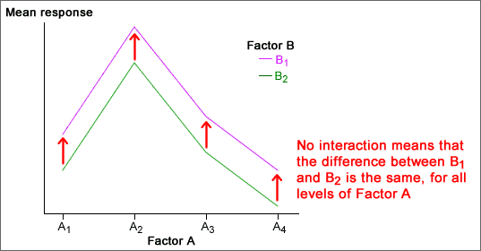

Model without interaction between the factors
The simplest model for the effect of two factors on a response is an additive one of the form:
(mean response) = (base value) + (effect of factor A) + (effect of factor B )
One implication of this model is that the effect on the response of changing the level of factor A is the same, whatever the level of factor B. In a similar way, the model assumes that the effect of changing factor B is the same whatever the level of factor A.

If this model holds, the effects of the two factors can be separately described in a table of means.
| Factor B | ||
|---|---|---|
| Level B1 | Level B2 | |
| Mean response | 87.25 | 70.25 |
| Factor A | ||||
|---|---|---|---|---|
| Level A1 | Level A2 | Level A3 | Level A4 | |
| Mean response | 66.5 |
120.0 |
79.0 |
49.4 |
It should be noted that this model does not always hold. Interaction between the effects of A and B occurs if the effect of changing B is different for different levels of A (and vice versa).